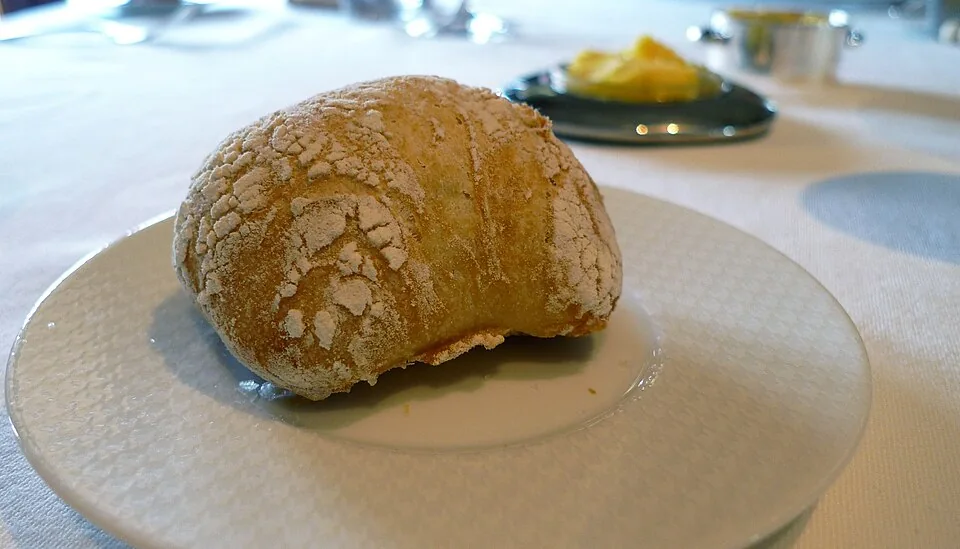

Ciabatta

Bildquelle | Zuletzt aufgerufen am
Unregelmäßige Poren und eine rustikale Form. Der italienische Klassiker mit der leichten Krume.
- Herkunft
- Venetien, Italien
- Getreide
- Weizen
- Geschmack
- Luftig & aromatisch
Geschichte
Ciabatta wirkt wie ein uraltes Landbrot, ist in seiner heutigen Form aber ein vergleichsweise junger Klassiker. Seine Entwicklung wird auf das Jahr 1982 und den Bäcker Arnaldo Cavallari im venezianischen Adria zurückgeführt. Das neue Brot sollte auch eine italienische Antwort auf das beliebte französische Baguette sein.
Der Name bedeutet auf Italienisch „Pantoffel“ und spielt auf die flache, längliche Form an. Von Venetien aus verbreitete sich Ciabatta international. Heute findet man zahlreiche Varianten – als großer Laib, als Brötchen und mit unterschiedlichen Vorteigen. Gemeinsam ist ihnen meist ein weicher, wasserreicher Teig.
Quelle: Hintergrund: Herkunft des Ciabattas | Zuletzt aufgerufen am
Eigenschaften
- Zutaten
- Weizenmehl, viel Wasser, Salz und Hefe oder Sauerteig. Manche Varianten enthalten Olivenöl.
- Geschmack
- Mild, mit getreidigen und durch längere Reife entstehenden Aromen; mit Öl auch dezent fruchtig.
- Kruste
- Dünn bis mittelkräftig, knusprig und häufig mit einer unregelmäßigen Mehlzeichnung.
- Krume
- Locker, elastisch und auffallend großporig. Das Innere bleibt oft leicht feucht.
Tomaten, Basilikum und gutes Olivenöl passen ebenso wie gegrilltes Gemüse oder eine sommerliche Suppe.
Weitere Informationen
- Ein Pantoffel zum Essen „Ciabatta“ heißt auf Italienisch Pantoffel. Gemeint ist die eher flache, breite und längliche Brotform.
- Viel Wasser im Teig Der hohe Wasseranteil trägt zur typischen offenen Porung bei. Solche Teige werden vorsichtig behandelt.
- Ein Vorteig bringt Aroma Viele Rezepte arbeiten mit einer Biga, einem italienischen Vorteig. Es gibt aber auch andere Teigführungen.
Rezept
Ein Ciabatta mit Vorteig und Olivenöl – Zeit zum Reifen gehört dazu.
Ciabatta auf Chefkoch | Zuletzt aufgerufen am